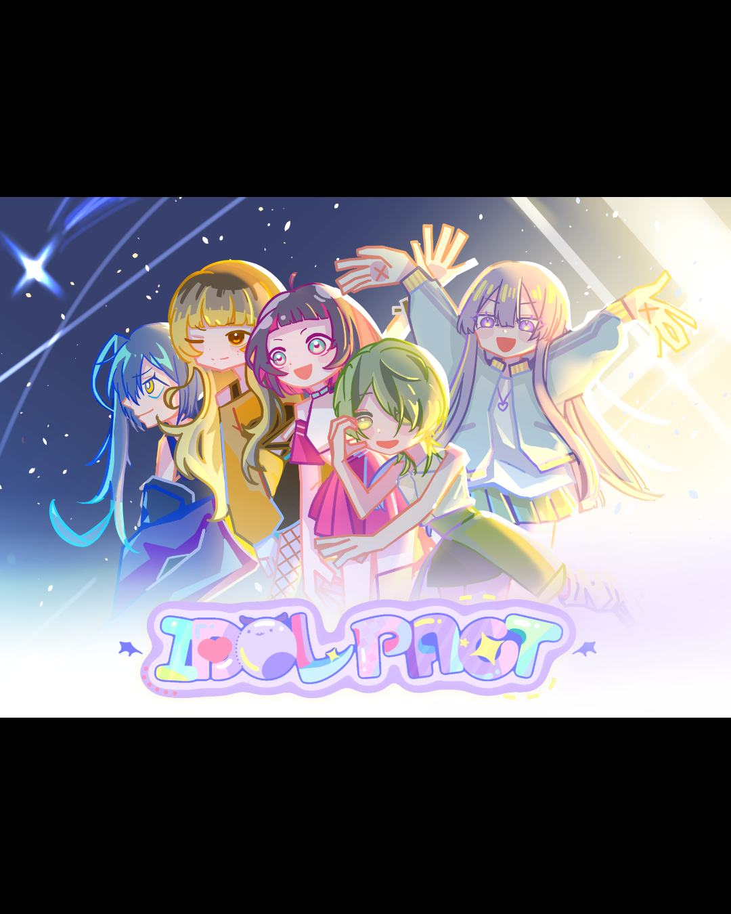
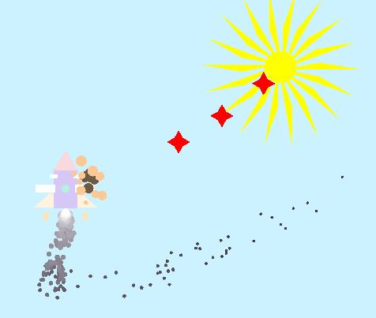
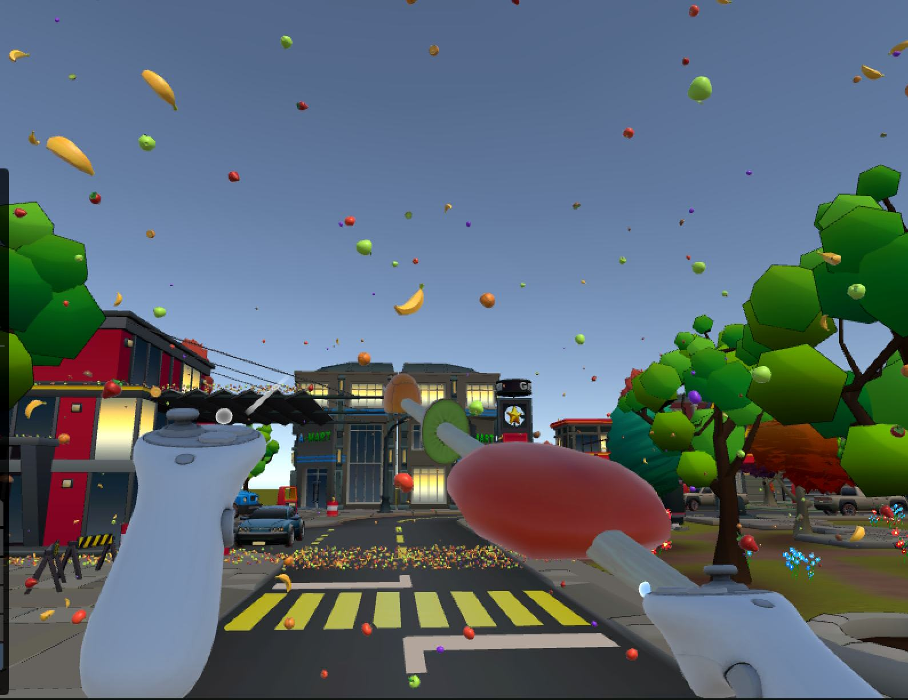
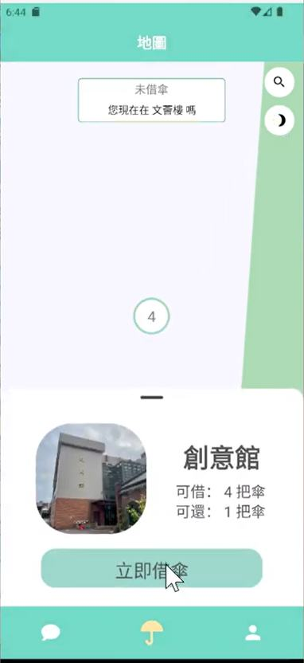
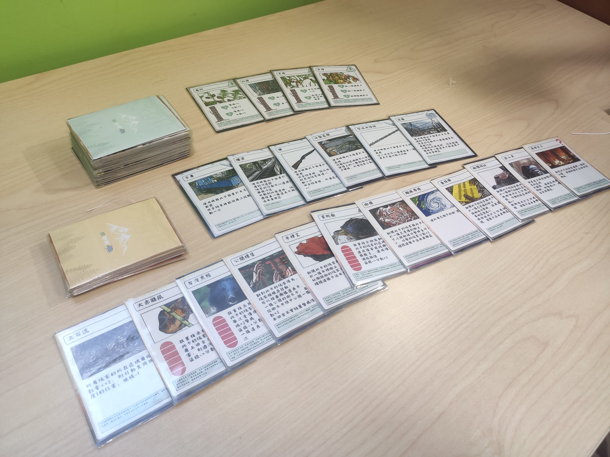

INTERACTION DESIGNER · GAME DEVELOPER
把設計的想像，
做成能玩的體驗。
嗨，我是翁靖瑜。橫跨互動設計、遊戲開發與視覺整合，喜歡把複雜的系統整理成直覺、有情感的使用體驗。
UI / UXUNITYVISUAL
SELECTED WORK · 2023—2026
不只展示結果，
也展示我是怎麼想的。
從企劃、互動流程、視覺設計到程式實作，以下是我如何在不同媒介中解決問題。

2D 彈幕射擊
C++ · OpenGL · Game Programming

竹籤不是用來烤肉的
Unity · VR · Interaction

傘電
React Native · UX Flow · App

林中碩鼠
Product Design · Education · Award
CASE STUDY 01 · 2024—2026
Idol Pact
如何讓龐大的養成數值、分支敘事與角色魅力，在同一個遊戲體驗裡協調運作？
01 / 挑戰
資訊量大，也要讓團隊做得動
多角色、多事件與多項數值彼此牽動。我建立素材、變數與事件命名規範，並維護角色數值及內容管理表，降低企劃、美術與程式之間的溝通成本。
02 / 方法
用系統支撐情感體驗
把角色培育、故事分支、公演與回饋拆成可驗證的流程，再以一致的視覺語言與角色表現串連，確保每次操作都能推進玩家與角色的關係。
03 / 貢獻
從概念一路整合到製作
同時掌握企劃、主美術與專案統籌，協調需求與製作進度，讓創意可以被轉譯成團隊共用、可執行的規格。
CASE STUDY 02 · 2025
2D 彈幕射擊遊戲
把計算機圖學作業，延伸成有節奏、有回饋、能完整遊玩的遊戲。
系統設計
可擴充的圖形架構
封裝 CShape 繼承架構，以多型建立不同飛船、敵人與子彈型態，讓新增遊戲元素更一致。
效能
密集彈幕仍維持流暢
以雙向鏈結串列管理子彈新增、移除與記憶體回收，精準掌握大量物件的生命週期。
體驗
技術之外也重視手感
加入 Boss、追蹤彈幕、粒子、拖尾與場景變化，讓技術展示變成完整且有節奏的遊戲體驗。
CASE STUDY 03 · 2025
竹籤不是用來烤肉的
把現實中的抓取、串水果與出餐，轉譯成直覺且穩定的 VR 互動。
互動
讓虛擬操作符合直覺
連接手把抓握與移動，完成碰撞判定、物件掛載及角度鎖定，讓「拿竹籤串水果」自然可理解。
邏輯
精準比對訂單內容
讀取竹籤上的水果子物件序列，與當前訂單種類及順序比對，建立清楚的得分與出餐回饋。
測試
用實機調整舒適度
在 Quest 3S 上反覆測試場景尺度與移動參數，兼顧操作效率並降低 3D 暈眩。
CASE STUDY 04 · 2024
傘電
以校園共享為情境，設計一套從尋傘、借用到跨點歸還都清楚的服務流程。
問題
借還流程不能讓人猜
將帳號驗證、定位、跨點借還、狀態提醒與留言板整理成連續任務，避免使用者在不同狀態間迷路。
規劃
先對齊流程，再做畫面
共同規劃 Functional Map、Flow Chart 與 UI Flow，把功能需求轉成團隊可以協作的介面結構。
執行
設計與程式同步推進
作為組長與主程式負責核心流程及互動回饋，持續在可行性與使用體驗之間調整。
CASE STUDY 05 · 2023
林中碩鼠
如何把山林保育議題，轉化為玩家願意主動探索與理解的立體桌遊？
轉譯
讓知識成為遊戲的一部分
把保育知識放進卡牌內容、配圖與遊戲選擇中，讓學習不是附加說明，而是推動玩家策略的核心。
設計
可拆裝的立體山林
設計兼顧視覺吸引力、收納與遊玩動線的立體棋盤，並反覆調整結構與規則。
成果
從專題走向真實溝通
參賽改良過程讓作品從「有創意」進一步成為大眾能理解、能參與的議題溝通媒介。
ABOUT ME
設計與技術之間，
我負責把兩邊接起來。
我具備程式開發與視覺設計雙領域能力，能從專案發想、UI/UX、互動邏輯、視覺製作一路推進至部署與測試。在團隊中，我常擔任領導與協調者，把抽象設計語彙轉成可執行的技術規格。
Design
UI/UX · Figma · Photoshop
Illustrator · CSP · Live2D
Development
Unity · C# · C++ · OpenGL
HTML/CSS/JS · React Native
Also
JLPT N1 · Team Leadership
Art Direction · Teaching
LET'S MAKE SOMETHING MEANINGFUL